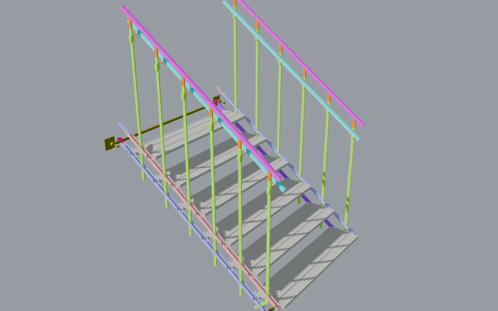
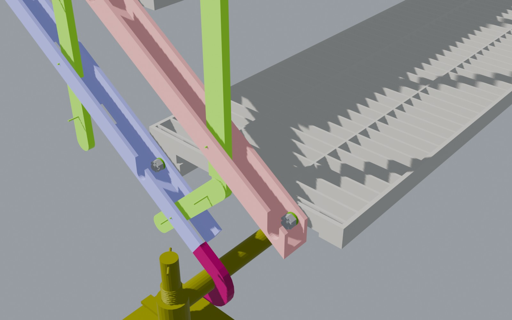
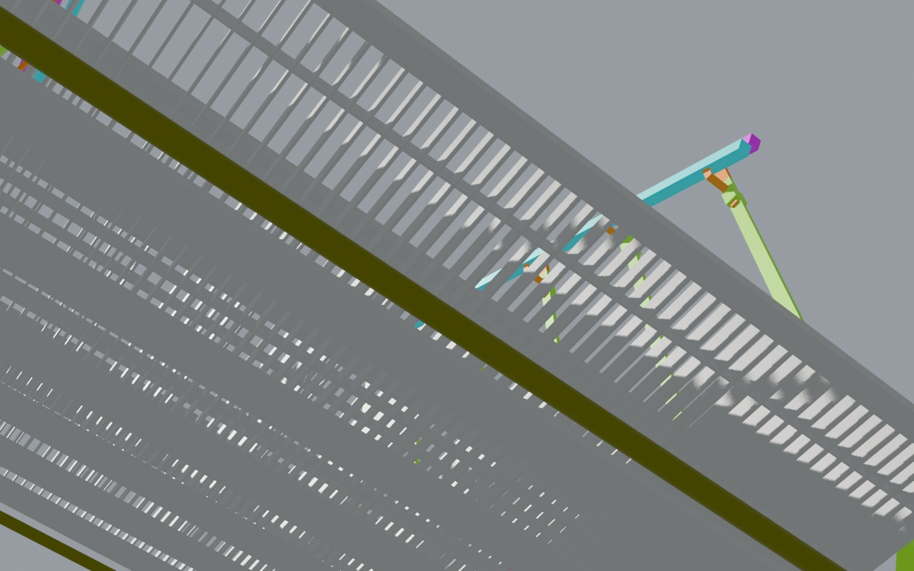
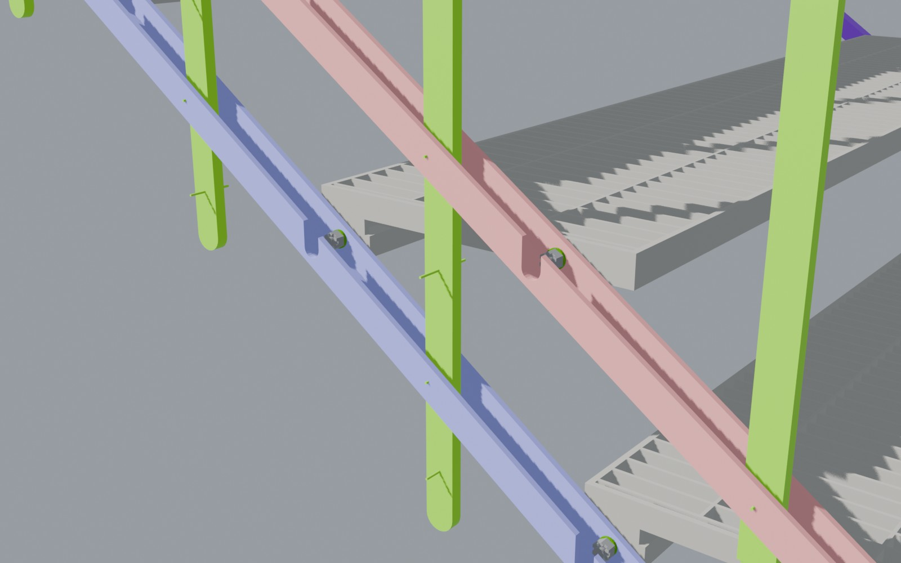
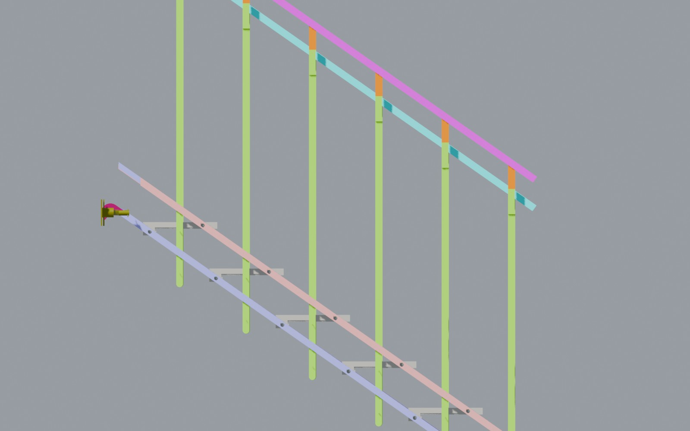
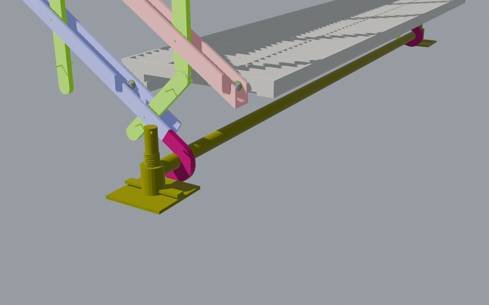
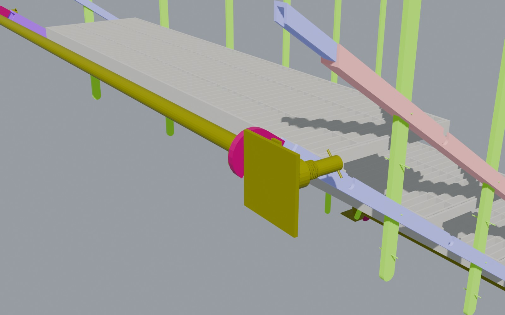
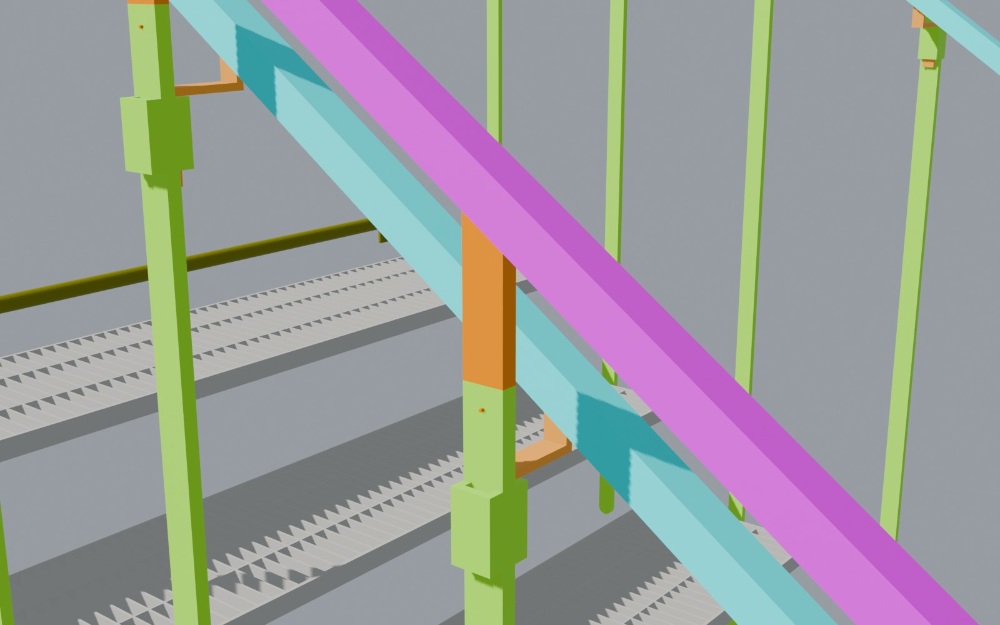

<title>Stair Datasheet Rev C</title>
<link rel="preconnect" href="https://fonts.googleapis.com">
<link rel="stylesheet" href="https://fonts.googleapis.com/css2?family=Barlow+Semi+Condensed:wght@500;600;700&family=IBM+Plex+Mono:wght@400;500&family=IBM+Plex+Sans:wght@400;500;600&display=swap">
<style>
:root {
  --paper:#EFF2F2; --surface:#FFFFFF; --ink:#15202A; --ink2:#4B5966; --rule:#D3DADE; --soft:#E6EBED;
  --accent:#1E5A86; --accentbg:#E1ECF4;
  --pass:#2F7A4F; --passbg:#E2F1E7; --fail:#B42318; --failbg:#FBE3E0; --warn:#9A620E; --warnbg:#FBEFD8;
  --display:"Barlow Semi Condensed","Arial Narrow",system-ui,sans-serif;
  --body:"IBM Plex Sans",system-ui,-apple-system,"Segoe UI",sans-serif;
  --mono:"IBM Plex Mono",ui-monospace,"Cascadia Mono",Consolas,monospace;
}
@media (prefers-color-scheme: dark) {
  :root:not([data-theme="light"]) {
    --paper:#0E151B; --surface:#152029; --ink:#E3E9ED; --ink2:#9DACB8; --rule:#27353F; --soft:#1B2833;
    --accent:#7DB7E3; --accentbg:#16283A;
    --pass:#6CC790; --passbg:#17301F; --fail:#FF8C80; --failbg:#3A1B18; --warn:#E6B45A; --warnbg:#382B12; color-scheme:dark;
  }
}
:root[data-theme="dark"] {
  --paper:#0E151B; --surface:#152029; --ink:#E3E9ED; --ink2:#9DACB8; --rule:#27353F; --soft:#1B2833;
  --accent:#7DB7E3; --accentbg:#16283A;
  --pass:#6CC790; --passbg:#17301F; --fail:#FF8C80; --failbg:#3A1B18; --warn:#E6B45A; --warnbg:#382B12; color-scheme:dark;
}
* { box-sizing:border-box; }
body { background:var(--paper); color:var(--ink); font:15px/1.55 var(--body); margin:0; padding-inline:16px; padding-block:28px 64px; }
.sheet { max-width:1180px; margin:0 auto; display:grid; gap:34px; }
h1,h2,h3 { font-family:var(--display); letter-spacing:.01em; text-wrap:balance; margin:0; }
h1 { font-size:clamp(34px,5vw,54px); font-weight:700; line-height:1.02; }
h2 { font-size:26px; font-weight:600; }
p { margin:0; max-width:70ch; }
a { color:var(--accent); }
a:focus-visible { outline:2px solid var(--accent); outline-offset:2px; }
.mono { font-family:var(--mono); font-variant-numeric:tabular-nums; }
.dim { color:var(--ink2); }
.eyebrow { font:600 12px/1 var(--mono); letter-spacing:.12em; text-transform:uppercase; color:var(--accent); }
/* document control strip */
.control { display:grid; grid-template-columns:repeat(auto-fit,minmax(150px,1fr)); border:1px solid var(--rule); background:var(--surface); }
.control div { padding:10px 14px; border-right:1px solid var(--rule); display:grid; gap:3px; }
.control div:last-child { border-right:0; }
.control span { font:500 11px/1 var(--mono); letter-spacing:.08em; text-transform:uppercase; color:var(--ink2); }
.control b { font:500 13.5px/1.3 var(--mono); }
.control .status b { color:var(--fail); }
header.title { display:grid; gap:14px; }
header.title p { color:var(--ink2); font-size:16.5px; }
/* section frame: label column + content */
section { display:grid; grid-template-columns:210px 1fr; gap:10px 34px; border-top:2px solid var(--ink); padding-top:14px; }
section > .lab { display:grid; align-content:start; gap:6px; }
section > .lab p { color:var(--ink2); font-size:13.5px; }
section > .body { display:grid; gap:18px; min-width:0; }
@media (max-width: 860px) { section { grid-template-columns:1fr; } }
/* overview */
.hero { display:grid; grid-template-columns:minmax(0,1.55fr) minmax(0,1fr); gap:18px; align-items:start; }
.hero img { width:100%; height:auto; display:block; border:1px solid var(--rule); }
.figs { display:grid; grid-template-columns:1fr 1fr; border:1px solid var(--rule); background:var(--surface); }
.figs div { padding:12px 14px; border-bottom:1px solid var(--rule); display:grid; gap:2px; min-width:0; overflow-wrap:anywhere; }
.figs div:nth-child(odd) { border-right:1px solid var(--rule); }
.figs div:nth-last-child(-n+2) { border-bottom:0; }
.figs span { font-size:12.5px; color:var(--ink2); }
.figs b { font:600 25px/1.1 var(--display); font-variant-numeric:tabular-nums; }
.figs b small { font:500 13px var(--mono); color:var(--ink2); margin-left:3px; }
.figs .bad b { color:var(--fail); }
@media (max-width: 860px) { .hero { grid-template-columns:1fr; } }
/* configuration gallery */
.gallery { display:grid; grid-template-columns:repeat(auto-fill,minmax(250px,1fr)); gap:14px; }
.cfg { margin:0; background:var(--surface); border:1px solid var(--rule); display:grid; grid-template-rows:auto 1fr; }
.cfg img { width:100%; height:auto; aspect-ratio:16/10; object-fit:cover; display:block; border-bottom:1px solid var(--rule); }
.cfg figcaption { padding:10px 12px 12px; display:grid; gap:8px; }
.cfg-top { display:grid; gap:1px; }
.cfg-top b { font:600 17px/1.2 var(--display); }
.cfg-top span { font-size:12px; }
.kv { margin:0; display:grid; gap:3px; font-size:12.5px; }
.kv div { display:grid; grid-template-columns:78px 1fr; gap:8px; }
.kv dt { color:var(--ink2); }
.kv dd { margin:0; }
/* tables */
.tw { overflow-x:auto; border:1px solid var(--rule); background:var(--surface); }
table { border-collapse:collapse; width:100%; font-size:13.5px; }
th, td { padding:8px 12px; border-bottom:1px solid var(--rule); text-align:left; vertical-align:top; }
thead th { font:600 11.5px/1.2 var(--mono); letter-spacing:.06em; text-transform:uppercase; color:var(--ink2); background:var(--soft); white-space:nowrap; }
tbody tr:last-child th, tbody tr:last-child td { border-bottom:0; }
tbody th { font-weight:500; }
td.num, th.num { text-align:right; font-family:var(--mono); font-variant-numeric:tabular-nums; white-space:nowrap; }
td.ok { color:var(--pass); } td.bad { color:var(--fail); font-weight:500; }
td.strong { font-weight:600; }
td.unit { color:var(--ink2); font-family:var(--mono); font-size:12.5px; white-space:nowrap; }
td.req { color:var(--ink2); }
td.ref { color:var(--ink2); white-space:nowrap; }
.note { display:block; color:var(--ink2); font-size:12px; font-weight:400; margin-top:2px; }
.chip { display:inline-block; font:600 11px/1 var(--mono); letter-spacing:.05em; text-transform:uppercase; padding:4px 7px; border-radius:3px; white-space:nowrap; }
.chip.pass { color:var(--pass); background:var(--passbg); }
.chip.fail { color:var(--fail); background:var(--failbg); }
.chip.warn { color:var(--warn); background:var(--warnbg); }
.tally { display:flex; flex-wrap:wrap; gap:8px; align-items:center; font-size:13.5px; color:var(--ink2); }
/* mass */
.split { display:grid; grid-template-columns:1.2fr 1fr; gap:18px; align-items:start; }
@media (max-width: 860px) { .split { grid-template-columns:1fr; } }
.mass { background:var(--surface); border:1px solid var(--rule); padding:12px 14px; display:grid; gap:7px; font-size:13px; }
.mrow { display:grid; grid-template-columns:150px 1fr 48px; gap:10px; align-items:center; }
.mrow .bar { height:9px; background:var(--soft); }
.mrow .bar i { display:block; height:100%; background:var(--accent); }
.mrow .mono { text-align:right; }
.mtot { border-top:1px solid var(--rule); padding-top:7px; display:flex; justify-content:space-between; font-weight:600; }
.matl { background:var(--accentbg); border:1px solid var(--rule); padding:12px 14px; display:grid; gap:6px; font-size:13.5px; }
.matl b { font:600 17px var(--display); }
/* details */
.details { display:grid; grid-template-columns:repeat(auto-fill,minmax(320px,1fr)); gap:14px; }
.det { margin:0; background:var(--surface); border:1px solid var(--rule); }
.det img { width:100%; height:auto; display:block; border-bottom:1px solid var(--rule); }
.det figcaption { padding:10px 12px 12px; display:grid; gap:4px; font-size:13.5px; }
.det b { font:600 17px var(--display); }
.det p { color:var(--ink2); }
/* conditions */
.cond { margin:0; padding:0; list-style:none; display:grid; gap:8px; }
.cond li { padding:10px 14px; background:var(--surface); border:1px solid var(--rule); border-left:3px solid var(--fail); }
.cond li.info { border-left-color:var(--accent); }
.next { background:var(--surface); border:1px dashed var(--ink2); padding:14px 16px; display:grid; gap:6px; }
.next b { font:600 19px var(--display); }
footer { color:var(--ink2); font-size:12.5px; border-top:1px solid var(--rule); padding-top:12px; display:grid; gap:4px; }

/* issue tabs */
.issues { max-width:1180px; margin:0 auto 26px; display:grid; grid-template-columns:repeat(auto-fit,minmax(230px,1fr)); border:1px solid var(--rule); background:var(--surface); }
.issues button { all:unset; box-sizing:border-box; cursor:pointer; display:grid; gap:3px; padding:10px 14px 9px; border-right:1px solid var(--rule); border-bottom:3px solid transparent; color:var(--ink); }
.issues button:last-child { border-right:0; }
.issues button[aria-selected="true"] { background:var(--accentbg); border-bottom-color:var(--accent); }
.issues button:focus-visible { outline:2px solid var(--accent); outline-offset:-3px; }
.issues span { font:500 11px/1 var(--mono); letter-spacing:.08em; text-transform:uppercase; color:var(--ink2); }
.issues b { font:600 18px/1.2 var(--display); }
.issues i { font-style:normal; font-size:12.5px; color:var(--ink2); }
/* utilisation ladder */
.ladder { background:var(--surface); border:1px solid var(--rule); padding:12px 14px 8px; display:grid; gap:7px; }
.lrow, .laxis { display:grid; grid-template-columns:minmax(150px,270px) minmax(0,1fr) 52px; gap:4px 14px; align-items:center; }
.lname { display:grid; gap:1px; min-width:0; }
.lname b { font-weight:600; font-size:13.5px; }
.lname span { font-size:12px; color:var(--ink2); }
.ltrack { position:relative; height:12px; background:var(--soft); }
.ltrack i { position:absolute; left:0; top:0; bottom:0; }
.ltrack i.pass { background:var(--pass); }
.ltrack i.fail { background:var(--fail); }
.ltrack::after { content:""; position:absolute; left:48.7%; top:-4px; bottom:-4px; border-left:2px solid var(--ink); }
.lval { font:500 13px var(--mono); font-variant-numeric:tabular-nums; text-align:right; }
.lval.ok { color:var(--pass); } .lval.bad { color:var(--fail); }
.laxis .ticks { position:relative; height:16px; font:500 11px/16px var(--mono); color:var(--ink2); }
.laxis .ticks span { position:absolute; top:0; transform:translateX(-50%); }
@media (max-width: 560px) {
  .lrow, .laxis { grid-template-columns:minmax(0,1fr) 46px; }
  .lname { grid-column:1 / -1; }
  .laxis > div:first-child { display:none; }
}
/* smallest-size box and correction notice */
.figs em { font-style:normal; font-size:12.5px; color:var(--ink2); }
.fix { background:var(--passbg); border:1px solid var(--rule); border-left:3px solid var(--pass); padding:12px 14px; display:grid; gap:6px; font-size:13.5px; }
.fix b { font:600 18px/1.25 var(--display); }
.corr { background:var(--surface); border:1px solid var(--rule); border-left:3px solid var(--fail); padding:14px 16px; display:grid; gap:8px; }
.corr b { font:600 20px/1.2 var(--display); }
.corr ul { margin:0; padding-left:18px; display:grid; gap:3px; }
td.bad { color:var(--fail); }
h3 { font-size:19px; font-weight:600; }
</style>

<main class="sheet">
  <div class="control" role="group" aria-label="Document control">
    <div><span>Document</span><b>DS-FMS</b></div>
    <div><span>Revision</span><b>C · 27 Sep 2026</b></div>
    <div><span>Source model</span><b>25 Sep model, cleaned 26 Sep · 35°</b></div>
    <div><span>Material</span><b>EN AW-6082-T6</b></div>
    <div class="status"><span>Status</span><b>Current model · not rated for events</b></div>
  </div>

  <header class="title">
    <div class="eyebrow">Technical datasheet · current staircase as drawn · Rev C</div>
    <h1>Folding modular stair unit</h1>
    <p>This sheet rates the current staircase exactly as drawn: the 25 Sep model (<span class="mono">25.9.2026 final STEP LADDER-standard.ifc</span>) with the owner’s clean-up of 26 Sep, in the standard 35° state. Every part was measured from the model and checked against the Aug-2026 events sheet, with the load path traced part to part: shell FE for the steps, 2D frames for the sides with every pin, hook and lock, and EN 1999-1-1 checks for 6082-T6. The changes that make it pass are in the Rev C change list.</p>
  </header>

  <section id="f-overview">
    <div class="lab"><h2>Overview</h2><p>Per unit, standard stair. Loads carried are the required load divided by the governing utilisation.</p></div>
    <div class="body">
      <div class="hero">
        
        <div class="figs">
          <div><span>Mass per unit (measured sections)</span><b>61.2<small>kg</small></b></div>
          <div><span>Treads</span><b>6<small>× 280 × 1,200 grating</small></b></div>
          <div><span>Clear width</span><b>1,101<small>mm</small></b></div>
          <div><span>Pitch · rise · going</span><b>35°<small>175 / 250</small></b></div>
          <div class="bad"><span>Crowd load carried</span><b>≈ 1.1<small>kN/m² (7.5 req.)</small></b></div>
          <div class="bad"><span>Barrier line load carried</span><b>0.16<small>kN/m (3.0 req.)</small></b></div>
          <div class="bad"><span>Tread, 4 kN at the nosing</span><b>3.64×<small>828 MPa</small></b></div>
          <div class="bad"><span>Worst part</span><b>30.5×<small>handrail poles</small></b></div>
        </div>
      </div>
    </div>
  </section>

  <section id="f-verdict">
    <div class="lab"><h2>Verdict by part</h2><p>Worst check of each part, as utilisation (demand ÷ resistance). Log scale; the black line is 1.0, the pass limit.</p></div>
    <div class="body">
      <div class="tally"><span class="chip fail">16 parts fail</span> <span class="chip pass">4 parts pass</span> <span>ULS 1.35 G + 1.5 Q (R153), crowd 7.5 kN/m² with going 250 (R113).</span></div>
      <div class="ladder" role="img" aria-label="Utilisation of each part on a log scale from 0.03 to 40; 16 of 20 parts are above 1.0">
        <div class="lrow"><div class="lname"><b>Handrail poles</b><span>RHS 25 × 10 × 2 · 1.5 kN on a post (R179)</span></div><div class="ltrack"><i class="fail" style="width:96.2%"></i></div><div class="lval bad">30.47</div></div><div class="lrow"><div class="lname"><b>Guide rails</b><span>Net section at the pin holes</span></div><div class="ltrack"><i class="fail" style="width:75.7%"></i></div><div class="lval bad">6.95</div></div><div class="lrow"><div class="lname"><b>Pole locking pegs</b><span>Ø2 pegs on each pole&#x27;s locking end · 5.9 kN to transfer</span></div><div class="ltrack"><i class="fail" style="width:75.0%"></i></div><div class="lval bad">6.62</div></div><div class="lrow"><div class="lname"><b>Base axle</b><span>Ø25 × 2.5 · hook 70 mm from the jack</span></div><div class="ltrack"><i class="fail" style="width:73.7%"></i></div><div class="lval bad">6.04</div></div><div class="lrow"><div class="lname"><b>Tread pins</b><span>Ø10 · bending with the frame link force</span></div><div class="ltrack"><i class="fail" style="width:71.9%"></i></div><div class="lval bad">5.30</div></div><div class="lrow"><div class="lname"><b>Tread, 4 kN sag</b><span>Nosing deflection vs L/100 (R115)</span></div><div class="ltrack"><i class="fail" style="width:70.5%"></i></div><div class="lval bad">4.80</div></div><div class="lrow"><div class="lname"><b>Top axle</b><span>Ø25 × 2.5 on the landing brackets</span></div><div class="ltrack"><i class="fail" style="width:67.5%"></i></div><div class="lval bad">3.85</div></div><div class="lrow"><div class="lname"><b>Tread, 4 kN stress</b><span>Nosing lip at mid-span (R114)</span></div><div class="ltrack"><i class="fail" style="width:66.7%"></i></div><div class="lval bad">3.64</div></div><div class="lrow"><div class="lname"><b>Tread, crowd sag</b><span>Nosing deflection vs L/250 (R115)</span></div><div class="ltrack"><i class="fail" style="width:66.5%"></i></div><div class="lval bad">3.60</div></div><div class="lrow"><div class="lname"><b>Hook plates</b><span>10 mm, base hooks, throat</span></div><div class="ltrack"><i class="fail" style="width:65.6%"></i></div><div class="lval bad">3.37</div></div><div class="lrow"><div class="lname"><b>Footplates</b><span>100 × 100 × 5, rod moment when the base holds</span></div><div class="ltrack"><i class="fail" style="width:62.3%"></i></div><div class="lval bad">2.66</div></div><div class="lrow"><div class="lname"><b>Handrail brackets</b><span>Bent flat 15 wide · 1.25 kN (R143)</span></div><div class="ltrack"><i class="fail" style="width:61.5%"></i></div><div class="lval bad">2.51</div></div><div class="lrow"><div class="lname"><b>Flats</b><span>2.7 × 25 · 4 kN on the step, top edge in compression</span></div><div class="ltrack"><i class="fail" style="width:60.5%"></i></div><div class="lval bad">2.33</div></div><div class="lrow"><div class="lname"><b>Top hook plates</b><span>10 mm, throat</span></div><div class="ltrack"><i class="fail" style="width:59.4%"></i></div><div class="lval bad">2.15</div></div><div class="lrow"><div class="lname"><b>Jack rods</b><span>M24, sideways load when the base holds</span></div><div class="ltrack"><i class="fail" style="width:56.2%"></i></div><div class="lval bad">1.71</div></div><div class="lrow"><div class="lname"><b>Right lower rail hole</b><span>Edge distance at the top tread</span></div><div class="ltrack"><i class="fail" style="width:52.8%"></i></div><div class="lval bad">1.34</div></div><div class="lrow"><div class="lname"><b>Grating bars</b><span>3 × 25 · 4 kN on the step (flats joined)</span></div><div class="ltrack"><i class="pass" style="width:48.6%"></i></div><div class="lval ok">0.99</div></div><div class="lrow"><div class="lname"><b>Tread, crowd stress</b><span>Frame stress at 7.5 kN/m² (R113)</span></div><div class="ltrack"><i class="pass" style="width:47.5%"></i></div><div class="lval ok">0.91</div></div><div class="lrow"><div class="lname"><b>Top landing bracket</b><span>Ø20 pin and 5 mm plate</span></div><div class="ltrack"><i class="pass" style="width:35.3%"></i></div><div class="lval ok">0.38</div></div><div class="lrow"><div class="lname"><b>Top rail &amp; handrail</b><span>U 25 × 25 × 5 · 3.0 kN/m (R142)</span></div><div class="ltrack"><i class="pass" style="width:15.3%"></i></div><div class="lval ok">0.09</div></div>
        <div class="laxis"><div></div><div class="ticks"><span style="left:16.7%">0.1</span><span style="left:32.0%">0.3</span><span style="left:48.7%">1</span><span style="left:64.0%">3</span><span style="left:80.7%">10</span><span style="left:96.0%">30</span></div><div></div></div>
      </div>
      <p class="dim">The hooks lock onto the axles, so the unit sits somewhere between two limits, depending on how well the ground holds the jacks.
      With the base free to slide, the rails and frame are worst (6.95). With the base held, the supports are worst (base axle 6.0×), and each top hook pulls 3.2 kN on its lock. Each part above shows the worse of the two.
      The hook locks aren't drawn: they carry 6.4–17.7 kN per side at the base and up to 11.3 kN at the top (see Supports).
      The crowd load carried (≈ 1.1 kN/m²) is set by the pegs on the poles' locking ends. Without them seated in both rails, each side frame is a mechanism and carries nothing.</p>
    </div>
  </section>

  

  <section id="f-tread">
    <div class="lab"><h2>Tread</h2><p>Measured in tread axes: x from the back face, z from the bottom. Span between pin bearings 1,215.75 mm.</p></div>
    <div class="body">
      <div class="details">
        <figure class="det">
          <figcaption><b>Tread end and pins</b><p>Rear pin (x 25, z 12.5) in the lower rail, front pin (x 225, z 37.5) in the upper rail. The left pins bear 6.75 mm from the end plate; the right ones bear 14 mm out, past a washer and a 7 mm spacer.</p></figcaption></figure>
        <figure class="det">
          <figcaption><b>Underside</b><p>Grating bars span the 250 mm between the back box and the nosing. Only the J, the L and two thin flats span the 1.2 m between the rails, so the nosing sags and the tread twists.</p></figcaption></figure>
      </div>
      <div class="tw"><table>
        <thead><tr><th>Element</th><th>Size as drawn</th><th class="num">A mm²</th><th class="num">I<sub>x</sub> mm⁴</th><th>Role</th></tr></thead>
        <tbody>
          <tr><th scope="row">Back J</th><td>rear wall 5 × 50, bottom flange 50 × 5, upturn 5 × 17.5</td><td class="num">537.5</td><td class="num">113,845</td><td>Carries the back half; closed into a box by the end plates</td></tr>
          <tr><th scope="row">Front L (nosing)</th><td>lip 5 × 25 (z 25–50), return 27.5 × 5</td><td class="num">237.5</td><td class="num">12,666</td><td class="bad">Carries the front half alone: this is what fails</td></tr>
          <tr><th scope="row">Grating bars</th><td>60 × 3 × 25 × 270, z 25–50, 20 mm pitch</td><td class="num">75</td><td class="num">3,906</td><td>Span front to back only; welded to the rear wall and the lip</td></tr>
          <tr><th scope="row">Flats</th><td>2 × 2.7 × 25 at x 83.65 and 190.8</td><td class="num">67.5</td><td class="num">3,516</td><td>Drawn 6.5 mm short of the end plates; checked joined to them, as confirmed. They hold the grating bars at mid-depth</td></tr>
          <tr><th scope="row">End plates</th><td>5 mm at y 15–20 and 1,210–1,215</td><td class="num">—</td><td class="num">—</td><td>Close the back box; 20 mm band (z 30–50) across the depth</td></tr>
          <tr><th scope="row">Pins</th><td>rear Ø10.73 (left) / Ø10 (right); front Ø10; castle nuts, split pins</td><td class="num">78.5</td><td class="num">—</td><td>Split pins sit beyond the pin ends and don't engage</td></tr>
        </tbody>
      </table></div>
      <div class="tw"><table>
        <thead><tr><th>Ref</th><th>Check</th><th class="num">Shell FE</th><th class="num">Hand check</th><th class="num">Limit</th><th class="num">Util.</th><th>Result</th></tr></thead>
        <tbody>
          <tr><td class="mono ref">R115</td><td>Crowd 7.5 kN/m², sag at the nosing<span class="note">twist 2.69° (FE) / 3.45° (hand)</span></td><td class="num">17.5 mm</td><td class="num">20.2 mm</td><td class="num">4.86 mm</td><td class="num bad">3.60</td><td><span class="chip fail">Fail</span></td></tr>
          <tr><td class="mono ref">R115</td><td>One person, 1 kN at the nosing</td><td class="num">18.8 mm</td><td class="num dim">—</td><td class="num">10 mm</td><td class="num bad">1.88</td><td><span class="chip fail">Fail</span></td></tr>
          <tr><td class="mono ref">R115</td><td>4 kN on 200 × 200, sag · front / centre / back<span class="note">twist up to 10°</span></td><td class="num">58.3 / 48.1 / 37.9 mm</td><td class="num dim">—</td><td class="num">12.2 mm</td><td class="num bad">4.80</td><td><span class="chip fail">Fail</span></td></tr>
          <tr><td class="mono ref">R113</td><td>Crowd 7.5 kN/m², frame stress (ULS)</td><td class="num">208 MPa</td><td class="num dim">—</td><td class="num">227 MPa</td><td class="num ok">0.91</td><td><span class="chip pass">Pass</span></td></tr>
          <tr><td class="mono ref">R114</td><td>4 kN, frame stress · front / centre / back<span class="note">peak in the nosing lip at mid-span</span></td><td class="num">828 / 675 / 526 MPa</td><td class="num dim">—</td><td class="num">227 MPa</td><td class="num bad">3.64</td><td><span class="chip fail">Fail</span></td></tr>
          <tr><td class="mono ref">R114</td><td>4 kN at the tread end, frame stress</td><td class="num">402 MPa</td><td class="num dim">—</td><td class="num">227 MPa</td><td class="num bad">1.77</td><td><span class="chip fail">Fail</span></td></tr>
          <tr><td class="mono ref">R114</td><td>Grating bar stress · 4 kN at the end / mid-span</td><td class="num">212 / 224 MPa</td><td class="num dim">—</td><td class="num">227 MPa</td><td class="num ok">0.94</td><td><span class="chip pass">Pass</span></td></tr>
          <tr><td class="mono ref">R114</td><td>Flats 2.7 × 25 stress · 4 kN at mid-span<span class="note">compression along the top edge</span></td><td class="num">529 MPa</td><td class="num dim">—</td><td class="num">227 MPa</td><td class="num bad">2.33</td><td><span class="chip fail">Fail</span></td></tr>
          <tr><td class="mono ref">R170</td><td>Right front pin Ø10, bending over the 14 mm lever<span class="note">3.26 if the pin also holds the rail's twist</span></td><td class="num">57.4 kNmm</td><td class="num dim">—</td><td class="num">29.5 kNmm</td><td class="num bad">1.95</td><td><span class="chip fail">Fail</span></td></tr>
        </tbody>
      </table></div>
      <div class="fix">
        <span class="eyebrow">Step design · A chosen, C the alternative · both with drain holes, FE-verified</span>
        <b>A · chosen · thin closed box: 3 mm top, 2 mm bottom and walls, two 2 mm inner webs, holes top and bottom</b>
        <span>4 kN at the nosing 0.41 (every seam welded 0.82) · sag 3.6 mm (≤ 12.2) · crowd 1.1 mm (≤ 4.86) · about 5.9 kg per step, the lightest.</span>
        
        <b>C · alternative · open grating: 3 × 50 bars along the step every 46 mm, 8 mm front bar, cross bars on top</b><span>4 kN 0.81 · sag 9.2 mm · crowd 3.0 mm · about 6.2 kg per step; the most open. Press-lock or swage the crossings; don’t weld them.</span>
        <span>Open shapes 25 mm deep don’t pass: a cut-out top sheet on the J + L, or a lattice cut from one plate (20 × 20 or finer), all fail the 4 kN point load and the sag limits.</span>
      </div>
      <p class="dim">The flats are checked joined to the end plates, as decided. They make the grating bars pass, but they are themselves over-stressed, and the J and L still carry the span.</p>
      <p class="dim">Cross-checks: the shell FE balances every load case to rounding. A variant with the bars as shells agrees within 3 %.
      The independent branched-section thin-walled calculation agrees within 12 %. A beam grillage gives a lower bound.</p>
    </div>
  </section>

  <section id="f-frame">
    <div class="lab"><h2>Side frame &amp; fold lock</h2><p>Each side as a 2D frame: two rails, six treads as pinned links (rear pin to front pin, about 7°), six poles, hooks on the base and top axles.</p></div>
    <div class="body">
      <div class="details">
        <figure class="det">
          <figcaption><b>How the frame stands</b><p>The treads are pinned at both ends, so rails and treads alone form a parallelogram that folds. The frame locks only through the poles. Each pole's bottom end (one piece with the pole) drops through both rails, and its Ø2 cross-pegs sit in J-notches in the rail walls. Without those pegs bearing, the frame sways 0.55–0.68 m at the design load.</p></figcaption></figure>
        <figure class="det">
          <figcaption><b>Rails, poles and rails above</b><p>The upper rail's slots are out of line with the poles by about 9 mm on the left (14 mm of play, 3.6 mm clash), 1.6–2.6 mm on the lower rails, and tight on the right upper rail.</p></figcaption></figure>
      </div>
      <div class="tw"><table>
        <thead><tr><th>Part</th><th>Check</th><th class="num">Demand</th><th class="num">Resistance</th><th class="num">Base free</th><th class="num">Base held</th><th>Result</th></tr></thead>
        <tbody>
          <tr><th scope="row">Lower rail, left<span class="note">U 35 × 25 × 5, net W 595 mm³</span></th><td>Bending + axial at the pin holes</td><td class="num dim">frame FE</td><td class="num">227 MPa</td><td class="num bad">4.88</td><td class="num bad">2.72</td><td><span class="chip fail">Fail</span></td></tr>
          <tr><th scope="row">Upper rail, left<span class="note">U 35 × 25 × 5, net W 595 mm³</span></th><td>Bending + axial at the pin holes</td><td class="num dim">frame FE</td><td class="num">227 MPa</td><td class="num bad">2.89</td><td class="num bad">2.06</td><td><span class="chip fail">Fail</span></td></tr>
          <tr><th scope="row">Lower rail, right<span class="note">inverted U 25 × 25 × 5, net W 581 mm³</span></th><td>Bending + axial at the pin holes</td><td class="num dim">frame FE</td><td class="num">227 MPa</td><td class="num bad">4.96</td><td class="num bad">2.99</td><td><span class="chip fail">Fail</span></td></tr>
          <tr><th scope="row">Upper rail, right<span class="note">inverted U 25 × 20 × 5, net W 216 mm³</span></th><td>Bending + axial at the pin holes</td><td class="num dim">frame FE</td><td class="num">227 MPa</td><td class="num bad">6.95</td><td class="num bad">5.16</td><td><span class="chip fail">Fail</span></td></tr>
          <tr><th scope="row">Right lower rail hole<span class="note">7.5 mm of metal below the Ø10 hole</span></th><td>Edge distance, top tread (T8.8)</td><td class="num">6.8 kN</td><td class="num">7.5 mm</td><td class="num bad">1.34</td><td class="num bad">1.25</td><td><span class="chip fail">Fail</span></td></tr>
          <tr><th scope="row">Pole locking pegs Ø2<span class="note">per pole, double shear; one piece with the pole</span></th><td>Rail-to-rail transfer through the pole</td><td class="num">5.89 kN</td><td class="num">0.89 kN</td><td class="num bad">6.62</td><td class="num bad">4.93</td><td><span class="chip fail">Fail</span></td></tr>
          <tr><th scope="row">Tread pins Ø10<span class="note">link force 9.9 kN at the top tread + tread reaction</span></th><td>Shear</td><td class="num">11.2 kN</td><td class="num">11.1 kN</td><td class="num ok">1.00</td><td class="num ok">0.78</td><td><span class="chip pass">Pass</span></td></tr>
          <tr><th scope="row">Tread pins Ø10</th><td>Bending, 6.75–14 mm lever</td><td class="num">156 kNmm</td><td class="num">29.5 kNmm</td><td class="num bad">5.30</td><td class="num bad">4.14</td><td><span class="chip fail">Fail</span></td></tr>
          <tr><th scope="row">Frame deflection (R115)<span class="note">SLS crowd, worst side</span></th><td>L/250 on the 1,831 mm span</td><td class="num">10.7 mm</td><td class="num">7.32 mm</td><td class="num bad">1.46</td><td class="num ok">0.90</td><td><span class="chip fail">Fail</span></td></tr>
          <tr><th scope="row">Natural frequency (R177)</th><td>f₁ ≥ 6 Hz</td><td class="num">9.2–14.8 Hz</td><td class="num">6 Hz</td><td class="num" colspan="2">≈ 6 Hz with tread flex</td><td><span class="chip warn">At limit</span></td></tr>
        </tbody>
      </table></div>
      <p class="dim">The hooks lock onto the axles, so both limits are real. “Base free” means the jacks slide on the ground; “Base held” means friction or a fixing stops them. The result column shows the worse of the two.
      Cross-check: a hand calculation of the lower rail alone gives about 7.7×, which brackets the frame results.</p>
    </div>
  </section>

  <section id="f-supports">
    <div class="lab"><h2>Supports</h2><p>Base: hooks on the axle, axle on two screw jacks. Top: hooks on the top axle, axle in the landing brackets.</p></div>
    <div class="body">
      <div class="details">
        <figure class="det">
          <figcaption><b>Base</b><p>The hooks sit 70 mm (left) and 62 mm (right) inboard of the jacks, so the Ø25 × 2.5 axle carries the full reaction in bending. The base hook plate wraps the underside and downhill side of the axle; the stair pushes on its open side, so the hook's lock carries the base reaction. The axle is drawn as two 1,309 mm tubes offset 53 mm, each reaching one jack; the second base axle at x 9,936 carries no load.</p></figcaption></figure>
        <figure class="det">
          <figcaption><b>Top landing bracket</b><p>5 mm plate and Ø20 pin pass. The model doesn't show how the bracket fixes to the landing or cabin. That fixing must take 11.3 kN per side (ULS) when the base holds, 4.4 kN when it slides.</p></figcaption></figure>
      </div>
      <div class="figs">
        <div><span>Base free to slide</span><b>6.4<small>kN at the base, vertical</small></b><em>top 4.4 kN down; nothing sideways at the base</em></div>
        <div class="bad"><span>Base held (friction or a fixing)</span><b>17.7<small>kN at the base</small></b><em>10.9 kN sideways into each jack; the top hook locks take 3.2 kN uplift</em></div>
      </div>
      <div class="tw"><table>
        <thead><tr><th>Part</th><th>Ref</th><th>Check</th><th class="num">Demand, base free</th><th class="num">Resistance</th><th class="num">Base free</th><th class="num">Base held</th><th>Result</th></tr></thead>
        <tbody>
          <tr><th scope="row">Base axle Ø25 × 2.5</th><td class="mono ref">R147</td><td>Bending, hook 70 mm from the jack</td><td class="num">497 MPa</td><td class="num">227 MPa</td><td class="num bad">2.19</td><td class="num bad">6.04</td><td><span class="chip fail">Fail</span></td></tr>
          <tr><th scope="row">Base axle Ø25 × 2.5</th><td class="mono ref">R147</td><td>Shear</td><td class="num">6.4 kN</td><td class="num">14.8 kN</td><td class="num ok">0.44</td><td class="num bad">1.20</td><td><span class="chip fail">Fail</span></td></tr>
          <tr><th scope="row">Top axle Ø25 × 2.5<span class="note">bracket 70 mm from the hook assumed</span></th><td class="mono ref">R147</td><td>Bending on the landing brackets</td><td class="num">343 MPa</td><td class="num">227 MPa</td><td class="num bad">1.51</td><td class="num bad">3.85</td><td><span class="chip fail">Fail</span></td></tr>
          <tr><th scope="row">Hook plates 10 mm, base<span class="note">hand check (curved beam); an FE of the hook is advised for sign-off</span></th><td class="mono ref">R150</td><td>Throat, ring ≈ 22 mm wide</td><td class="num">277 MPa</td><td class="num">227 MPa</td><td class="num bad">1.22</td><td class="num bad">3.37</td><td><span class="chip fail">Fail</span></td></tr>
          <tr><th scope="row">Hook plates 10 mm, top</th><td class="mono ref">R150</td><td>Throat</td><td class="num">191 MPa</td><td class="num">227 MPa</td><td class="num ok">0.84</td><td class="num bad">2.15</td><td><span class="chip fail">Fail</span></td></tr>
          <tr><th scope="row">Hook lock, base<span class="note">the plate opens where the stair pushes</span></th><td class="mono ref">R150</td><td>Lock carries the base reaction</td><td class="num">6.4 kN</td><td class="num">not drawn</td><td class="num bad">6.4 kN</td><td class="num bad">17.7 kN</td><td><span class="chip fail">Design it</span></td></tr>
          <tr><th scope="row">Hook lock, top<span class="note">plate carries it while the base slides</span></th><td class="mono ref">R150</td><td>Lock carries the top reaction when the base holds</td><td class="num">0</td><td class="num">not drawn</td><td class="num ok">0</td><td class="num bad">11.3 kN</td><td><span class="chip fail">Design it</span><span class="note">incl. 3.2 kN uplift</span></td></tr>
          <tr><th scope="row">Hook plates 10 mm</th><td class="mono ref">R170</td><td>Axle bearing on the hook</td><td class="num">6.4 kN</td><td class="num">75 kN</td><td class="num ok">0.09</td><td class="num ok">0.24</td><td><span class="chip pass">Pass</span></td></tr>
          <tr><th scope="row">Jack rod M24<span class="note">held: axial + 10.9 kN sideways, 30 mm above the footplate</span></th><td class="mono ref">R174</td><td>Axial (+ bending when held)</td><td class="num">18 MPa</td><td class="num">227 MPa</td><td class="num ok">0.08</td><td class="num bad">1.71</td><td><span class="chip fail">Fail</span></td></tr>
          <tr><th scope="row">Footplate 100 × 100 × 5<span class="note">held: rod moment makes the ground pressure uneven</span></th><td class="mono ref">R174</td><td>Plate bending from the rod</td><td class="num">111 MPa</td><td class="num">227 MPa</td><td class="num ok">0.49</td><td class="num bad">2.66</td><td><span class="chip fail">Fail</span><span class="note">R73 asks for 150 × 150</span></td></tr>
          <tr><th scope="row">Ground friction<span class="note">aluminium on timber or concrete ≈ 0.4–0.5</span></th><td class="mono ref">R174</td><td>Friction needed to hold the base (H ÷ V)</td><td class="num">0</td><td class="num">≈ 0.5</td><td class="num ok">0</td><td class="num bad">0.80</td><td><span class="chip warn">Partly holds</span><span class="note">the real state lies between the two limits</span></td></tr>
          <tr><th scope="row">Top bracket pin Ø20</th><td class="mono ref">R170</td><td>Single shear</td><td class="num">4.4 kN</td><td class="num">44.5 kN</td><td class="num ok">0.10</td><td class="num ok">0.25</td><td><span class="chip pass">Pass</span></td></tr>
          <tr><th scope="row">Top bracket plate 5 mm</th><td class="mono ref">R170</td><td>Pin bearing</td><td class="num">4.4 kN</td><td class="num">30.0 kN</td><td class="num ok">0.15</td><td class="num ok">0.38</td><td><span class="chip pass">Pass</span></td></tr>
        </tbody>
      </table></div>
    </div>
  </section>

  <section id="f-barrier">
    <div class="lab"><h2>Barrier &amp; handrail</h2><p>Poles at 250 mm in plan (305 mm along the slope), lever 1,050 mm from the upper rail web to the top rail.</p></div>
    <div class="body">
      <div class="details">
        <figure class="det">
          <figcaption><b>Pole tops</b><p>Top rail (U 25 × 25 × 5) on pivot pins at the pole tops; handrail (the same channel) on bent 15 mm brackets 57 mm off the poles.</p></figcaption></figure>
      </div>
      <div class="tw"><table>
        <thead><tr><th>Ref</th><th>Load</th><th>Part</th><th class="num">Stress</th><th class="num">Util.</th><th>Result</th></tr></thead>
        <tbody>
          <tr><td class="mono ref">R142</td><td>3.0 kN/m at the top rail</td><td>Pole RHS 25 × 10 × 2</td><td class="num">4,226 MPa</td><td class="num bad">18.60</td><td><span class="chip fail">Fail</span></td></tr>
          <tr><td class="mono ref">R143</td><td>1.25 kN point on the top rail</td><td>Pole RHS 25 × 10 × 2</td><td class="num">5,770 MPa</td><td class="num bad">25.39</td><td><span class="chip fail">Fail</span></td></tr>
          <tr><td class="mono ref">R179</td><td>1.5 kN at the top of a post</td><td>Pole RHS 25 × 10 × 2</td><td class="num">6,924 MPa</td><td class="num bad">30.47</td><td><span class="chip fail">Fail</span></td></tr>
          <tr><td class="mono ref">R142</td><td>5.0 kN/m, viewing areas</td><td>Pole RHS 25 × 10 × 2</td><td class="num">7,044 MPa</td><td class="num bad">30.99</td><td><span class="chip fail">Fail</span></td></tr>
          <tr><td class="mono ref">R178</td><td>1.0 kN/m vertical</td><td>Top rail U 25 × 25 × 5</td><td class="num">9 MPa</td><td class="num ok">0.04</td><td><span class="chip pass">Pass</span></td></tr>
          <tr><td class="mono ref">R142</td><td>3.0 kN/m horizontal</td><td>Top rail U 25 × 25 × 5</td><td class="num">20 MPa</td><td class="num ok">0.09</td><td><span class="chip pass">Pass</span></td></tr>
          <tr><td class="mono ref">R143</td><td>1.25 kN on the handrail</td><td>Bracket, bent flat 15 wide<span class="note">5 mm thickness assumed; the thinner 4.2 mm measured gives about 3.0</span></td><td class="num">570 MPa</td><td class="num bad">2.51</td><td><span class="chip fail">Fail</span></td></tr>
        </tbody>
      </table></div>
      <h3>Pole options: hollow or solid bar</h3>
      <p>Utilisation of each pole option under each barrier load, 6082-T6. The size across the stair is what counts; the pole's lock pin is part of the pole, so the same size runs down through both rails.</p>
      <div class="tw"><table>
        <thead><tr><th>Pole (along × across the stair)</th><th>Fits the rail slots?</th><th class="num">3.0 kN/m</th><th class="num">1.25 kN</th><th class="num">1.5 kN post</th><th class="num">5.0 kN/m</th><th class="num">12 poles, kg</th></tr></thead>
        <tbody><tr><th scope="row">Hollow RHS 25 × 10 × 2 <em>(as drawn)</em></th><td>Yes</td><td class="num bad">18.57</td><td class="num bad">25.39</td><td class="num bad">30.41</td><td class="num bad">31.02</td><td class="num">4.6</td></tr><tr><th scope="row">Solid bar 25 × 10</th><td>Yes</td><td class="num bad">15.21</td><td class="num bad">20.79</td><td class="num bad">24.90</td><td class="num bad">25.40</td><td class="num">9.2</td></tr><tr><th scope="row">Solid bar 25 × 15</th><td>Right rail slot is 15: widest that fits</td><td class="num bad">6.76</td><td class="num bad">9.24</td><td class="num bad">11.07</td><td class="num bad">11.29</td><td class="num">13.8</td></tr><tr><th scope="row">Solid bar 25 × 25</th><td>Left rail slot is 25: widest that fits; right slot too narrow</td><td class="num bad">2.43</td><td class="num bad">3.33</td><td class="num bad">3.98</td><td class="num bad">4.06</td><td class="num">23.0</td></tr><tr><th scope="row">Solid bar 25 × 39</th><td>No: slots must widen, or poles go outside the rails</td><td class="num ok">1.00</td><td class="num bad">1.37</td><td class="num bad">1.64</td><td class="num bad">1.67</td><td class="num">35.9</td></tr><tr><th scope="row">Solid bar 25 × 51</th><td>No</td><td class="num ok">0.58</td><td class="num ok">0.80</td><td class="num ok">0.96</td><td class="num ok">0.98</td><td class="num">47.0</td></tr><tr><th scope="row">Hollow RHS 25 × 60 × 3</th><td>No</td><td class="num ok">0.95</td><td class="num bad">1.30</td><td class="num bad">1.55</td><td class="num bad">1.58</td><td class="num">17.5</td></tr><tr><th scope="row">Hollow RHS 25 × 85 × 3</th><td>No</td><td class="num ok">0.54</td><td class="num ok">0.74</td><td class="num ok">0.88</td><td class="num ok">0.90</td><td class="num">23.0</td></tr></tbody>
      </table></div>
      <div class="matl">
        <span class="eyebrow">Solid bar · which aluminium</span>
        <b>Use 6082-T6 (or 6061-T6) bar, not pure aluminium</b>
        <span>A solid bar only passes at 25 × 39 for the 3.0 kN/m line load, or 25 × 51 for every barrier load. Neither fits through the current slots, so the slots must widen or the poles must mount outside the rails.
        “Pure” aluminium (1000 series, e.g. EN AW-1050A H14, proof strength about 85 MPa) is about a third as strong as 6082-T6 and isn't one of the structural alloys in EN 1999-1-1. A pure-aluminium pole would need about 25 × 86 for the 1.5 kN post load.
        A hollow 25 × 85 × 3 does the same job at less than half the mass of the solid 25 × 51.</span>
      </div>
    </div>
  </section>

  <section id="f-compliance">
    <div class="lab"><h2>Compliance, Aug-2026 events sheet</h2><p>R-numbers are rows of the sheet.</p></div>
    <div class="body">
      <h3>Loads</h3>
      <div class="tw"><table>
        <thead><tr><th>Ref</th><th>Requirement</th><th>25 Sep model</th><th class="num">Util.</th><th>Result</th></tr></thead>
        <tbody>
          <tr><td class="mono ref">R113</td><td>Crowd 7.5 kN/m²: tread stress</td><td class="mono">208 MPa</td><td class="num ok">0.91</td><td><span class="chip pass">Pass</span></td></tr>
          <tr><td class="mono ref">R113</td><td>Crowd 7.5 kN/m²: side frame, pins, lock, supports</td><td class="mono">carries ≈ 1.1 kN/m²</td><td class="num bad">6.62</td><td><span class="chip fail">Fail</span></td></tr>
          <tr><td class="mono ref">R114</td><td>4.0 kN on 200 × 200: tread stress</td><td class="mono">828 MPa at the nosing</td><td class="num bad">3.64</td><td><span class="chip fail">Fail</span></td></tr>
          <tr><td class="mono ref">R115</td><td>Tread sag ≤ L/250 under crowd (4.86 mm)</td><td class="mono">17.5 mm</td><td class="num bad">3.60</td><td><span class="chip fail">Fail</span></td></tr>
          <tr><td class="mono ref">R115</td><td>&lt; 10 mm under one person</td><td class="mono">18.8 mm</td><td class="num bad">1.88</td><td><span class="chip fail">Fail</span></td></tr>
          <tr><td class="mono ref">R115</td><td>4 kN sag ≤ L/100 (12.2 mm)</td><td class="mono">58.3 mm</td><td class="num bad">4.80</td><td><span class="chip fail">Fail</span></td></tr>
          <tr><td class="mono ref">R115</td><td>Frame sag ≤ L/250 (7.32 mm)</td><td class="mono">8.0–10.7 mm<span class="note">4.1–6.6 if the base is fixed</span></td><td class="num bad">1.46</td><td><span class="chip fail">Fail</span></td></tr>
          <tr><td class="mono ref">R170</td><td>Tread pins Ø10</td><td class="mono">1.95 tread only · 5.30 with link</td><td class="num bad">5.30</td><td><span class="chip fail">Fail</span></td></tr>
          <tr><td class="mono ref">R170</td><td>Pin hole edge distance, right lower rail</td><td class="mono">7.5 mm, needs 10.1</td><td class="num bad">1.34</td><td><span class="chip fail">Fail</span></td></tr>
          <tr><td class="mono ref">R78/R104</td><td>Positive, captive fold lock</td><td class="mono">Ø2 pegs on the pole ends</td><td class="num bad">6.62</td><td><span class="chip fail">Fail</span></td></tr>
          <tr><td class="mono ref">R147</td><td>Supports: axle, hooks, jacks</td><td class="mono">axle 6.0×, hooks 3.4×, jacks 1.7×; hook locks not drawn</td><td class="num bad">6.04</td><td><span class="chip fail">Fail</span></td></tr>
          <tr><td class="mono ref">R73</td><td>Base plates 150 × 150</td><td class="mono">100 × 100 × 5 (strength 2.66)</td><td class="num dim">—</td><td><span class="chip fail">Fail</span></td></tr>
          <tr><td class="mono ref">R142</td><td>Barrier 3.0 kN/m</td><td class="mono">0.16 kN/m carried</td><td class="num bad">18.60</td><td><span class="chip fail">Fail</span></td></tr>
          <tr><td class="mono ref">R143</td><td>Point 1.25 kN on the top rail</td><td class="mono">poles</td><td class="num bad">25.39</td><td><span class="chip fail">Fail</span></td></tr>
          <tr><td class="mono ref">R179</td><td>Post load 1.5 kN</td><td class="mono">0.05 kN carried</td><td class="num bad">30.47</td><td><span class="chip fail">Fail</span></td></tr>
          <tr><td class="mono ref">R178</td><td>Top rail vertical 1.0 kN/m</td><td class="mono">U 25 × 25 × 5</td><td class="num ok">0.04</td><td><span class="chip pass">Pass</span></td></tr>
          <tr><td class="mono ref">R177</td><td>Vertical f₁ ≥ 6 Hz</td><td class="mono">9.2–14.8 Hz frame; ≈ 6 with tread flex</td><td class="num dim">—</td><td><span class="chip warn">At limit</span></td></tr>
        </tbody>
      </table></div>
      <h3>Geometry and detailing</h3>
      <div class="tw"><table>
        <thead><tr><th>Ref</th><th>Requirement</th><th>25 Sep model</th><th>Result</th></tr></thead>
        <tbody>
          <tr><td class="mono ref">R9</td><td>Stair pitch ≤ 35°</td><td class="mono">35.0°</td><td><span class="chip pass">Pass</span><span class="note">at the limit</span></td></tr>
          <tr><td class="mono ref">R4</td><td>Going ≥ 250</td><td class="mono">250 mm</td><td><span class="chip pass">Pass</span><span class="note">at the limit</span></td></tr>
          <tr><td class="mono ref">R5</td><td>Riser 100–200 (170 recommended)</td><td class="mono">175 mm</td><td><span class="chip pass">Pass</span></td></tr>
          <tr><td class="mono ref">R8</td><td>2 × rise + going 540–660</td><td class="mono">600 mm</td><td><span class="chip pass">Pass</span></td></tr>
          <tr><td class="mono ref">R7</td><td>Open riser gap ≤ 120</td><td class="mono">125 mm under the back box</td><td><span class="chip fail">Fail</span></td></tr>
          <tr><td class="mono ref">R3</td><td>Clear width ≥ 1,100</td><td class="mono">1,101 mm</td><td><span class="chip pass">Pass</span></td></tr>
          <tr><td class="mono ref">R63</td><td>Top rail ≥ 1,100 above datum</td><td class="mono">1,112 above the step surface · 1,013 above the pitch line</td><td><span class="chip warn">Check datum</span><span class="note">passes from the step; 87 mm short from the pitch line</span></td></tr>
          <tr><td class="mono ref">R64</td><td>Graspable handrail, 25–50</td><td class="mono">U 25 × 25 channel, 903 above the pitch line, to be padded</td><td><span class="chip warn">Padding</span><span class="note">owner adds padding; the padded shape should be 25–50 mm and graspable</span></td></tr>
          <tr><td class="mono ref">R65/R68</td><td>No gap &gt; 470 in the side protection</td><td class="mono">poles at ≈ 225 clear; nothing between tread and handrail</td><td><span class="chip warn">By others</span><span class="note">no infill, mid rail or toe board, by decision</span></td></tr>
          <tr><td class="mono ref">R104</td><td>Slots line up for the lock</td><td class="mono">left upper rail ≈ 9 mm out</td><td><span class="chip fail">Fail</span></td></tr>
          <tr><td class="mono ref">R16/R94</td><td>Slip resistance PTV ≥ 36 (40 events)</td><td class="mono">3 mm plain bar tops</td><td><span class="chip warn">Specify</span></td></tr>
          <tr><td class="mono ref">R17</td><td>Contrasting nosings</td><td class="mono">none</td><td><span class="chip warn">Specify</span></td></tr>
          <tr><td class="mono ref">R106</td><td>Post spacing ≤ 2.5 m</td><td class="mono">305 mm</td><td><span class="chip pass">Pass</span></td></tr>
        </tbody>
      </table></div>
    </div>
  </section>

  <section id="f-components">
    <div class="lab"><h2>Components &amp; material</h2><p>Sections measured on the model; masses at 2,700 kg/m³, drawn duplicates not counted.</p></div>
    <div class="body">
      <div class="tw"><table>
        <thead><tr><th>Component</th><th>Qty</th><th>Section as modelled</th><th class="num">A mm²</th><th class="num">I mm⁴</th></tr></thead>
        <tbody>
          <tr><th scope="row">Tread frame</th><td class="mono">6</td><td>Back J + front L, 1,200 between end plates</td><td class="num">537.5 + 237.5</td><td class="num">113,845 + 12,666</td></tr>
          <tr><th scope="row">Grating bars</th><td class="mono">360</td><td>3 × 25 × 270</td><td class="num">75</td><td class="num">3,906</td></tr>
          <tr><th scope="row">Flats (to be joined)</th><td class="mono">12</td><td>2.7 × 25 × 1,177 as drawn</td><td class="num">67.5</td><td class="num">3,516</td></tr>
          <tr><th scope="row">Guide rails, left</th><td class="mono">1 + 1</td><td>U 35 × 25 × 5, open at the top</td><td class="num">375</td><td class="num">21,615</td></tr>
          <tr><th scope="row">Guide rail, right lower</th><td class="mono">1</td><td>Inverted U 25 × 25 × 5</td><td class="num">325</td><td class="num">18,946</td></tr>
          <tr><th scope="row">Guide rail, right upper</th><td class="mono">1</td><td>Inverted U 25 × 20 × 5</td><td class="num">275</td><td class="num">9,891</td></tr>
          <tr><th scope="row">Poles</th><td class="mono">12</td><td>Hollow RHS 25 × 10 × 2, 1,138 long</td><td class="num">124</td><td class="num">1,706 across</td></tr>
          <tr><th scope="row">Pole locking ends</th><td class="mono">12</td><td>25 × 10 × 245, one piece with the pole, Ø2 cross-pegs</td><td class="num">250</td><td class="num">2,083</td></tr>
          <tr><th scope="row">Top rails + handrails</th><td class="mono">2 + 2</td><td>U 25 × 25 × 5, 1,726 long</td><td class="num">325</td><td class="num">18,947</td></tr>
          <tr><th scope="row">Axles</th><td class="mono">3</td><td>Tube Ø25 × 2.5, drawn as two 1,309 tubes offset 53 mm</td><td class="num">177</td><td class="num">11,321</td></tr>
          <tr><th scope="row">Hooks</th><td class="mono">4</td><td>10 mm plate, ring ≈ 22 mm wide</td><td class="num">—</td><td class="num">—</td></tr>
          <tr><th scope="row">Base jacks</th><td class="mono">2</td><td>M24 rod, footplate 100 × 100 × 5</td><td class="num">353</td><td class="num">—</td></tr>
          <tr><th scope="row">Top landing brackets</th><td class="mono">2</td><td>137/140 × 5 plates, Ø20 pin</td><td class="num">—</td><td class="num">—</td></tr>
          <tr><th scope="row">Handrail brackets</th><td class="mono">12</td><td>Bent flat 15 × ≈ 4.5, 57 mm offset</td><td class="num">—</td><td class="num">—</td></tr>
        </tbody>
      </table></div>
      <div class="split">
        <div class="mass"><div class="mrow"><span>Grating bars 360×</span><span class="bar"><i style="width:100.0%"></i></span><span class="mono">19.68</span></div><div class="mrow"><span>Tread frames 6×</span><span class="bar"><i style="width:82.6%"></i></span><span class="mono">16.25</span></div><div class="mrow"><span>Guide rails 4×</span><span class="bar"><i style="width:33.5%"></i></span><span class="mono">6.59</span></div><div class="mrow"><span>Top rails + handrails 4×</span><span class="bar"><i style="width:30.8%"></i></span><span class="mono">6.06</span></div><div class="mrow"><span>Poles 12×</span><span class="bar"><i style="width:23.2%"></i></span><span class="mono">4.57</span></div><div class="mrow"><span>Flats 12×</span><span class="bar"><i style="width:13.1%"></i></span><span class="mono">2.57</span></div><div class="mrow"><span>Lock pins 12×</span><span class="bar"><i style="width:10.1%"></i></span><span class="mono">1.98</span></div><div class="mrow"><span>Axles 3×</span><span class="bar"><i style="width:9.5%"></i></span><span class="mono">1.87</span></div><div class="mrow"><span>Hooks, fixings</span><span class="bar"><i style="width:3.5%"></i></span><span class="mono">0.68</span></div><div class="mrow"><span>Top posts, pivots</span><span class="bar"><i style="width:3.1%"></i></span><span class="mono">0.61</span></div><div class="mrow"><span>Handrail brackets 12×</span><span class="bar"><i style="width:1.7%"></i></span><span class="mono">0.33</span></div><div class="mtot"><span>Total per unit</span><span class="mono">61.2 kg</span></div></div>
        <div class="matl">
          <span class="eyebrow">Material, all parts</span>
          <b>Aluminium EN AW-6082-T6</b>
          <span class="mono">Extrusions t ≤ 5: f₀ 250 · f<sub>u</sub> 290 MPa<br>Bar and rod: f₀ 250 · f<sub>u</sub> 295 MPa<br>Welded zone: f₀,haz 125 · f<sub>u</sub>,haz 185 MPa<br>E 70 GPa · γM1 1.10 · γM2 = γMp 1.25</span>
          <span>EN 1999-1-1 Table 3.2b (thickness band t ≤ 5 mm for the extrusion walls).</span>
        </div>
      </div>
    </div>
  </section>

  <section id="f-model">
    <div class="lab"><h2>Model issues</h2><p>Found while mapping every part and contact. They don't change the checks above, but the drawings should fix them.</p></div>
    <div class="body">
      <ul class="cond">
        <li class="info">Still drawn twice: 18 parts (4 right poles with their locking ends and both top pivot parts, and the 2 right hooks), and 6 empty faces. Each part is counted once in the checks.</li>
        <li>The axle tube kept at the base (and at the top) stops about 34 mm short of the right-hand jack head (and the right bracket rod). It must be one tube from support to support.</li>
        <li>At the upper rail the pole has a hole but no pegs; the owner confirms 4 pegs per pole (2 per rail), so the upper pair is missing from the drawing.</li>
        <li>As drawn, the base hook plates wrap the underside and downhill side of the axle, so the stair pushes on their open side. The hooks lock onto the axles (confirmed), but the lock isn't drawn and carries the whole base reaction.</li>
        <li class="info">The two flats in each step stop 6.5 mm short of the end plates. They will be joined (confirmed), and the checks use them joined.</li>
        <li>Left rear tread pin is Ø10.73 in a Ø10 hole: it can't be assembled.</li>
        <li>Split pins sit beyond the pin ends, so they don't retain the nuts.</li>
        <li>Each pole and its locking end are one piece in reality but drawn as two overlapping bodies (z 87.5–225); pins, poles and slots are drawn line-to-line with no clearance.</li>
        <li>Left upper rail slots are about 9 mm out of line with the poles (3.6 mm clash); lower rails 1.6–2.6 mm.</li>
        <li class="info">The second base axle (x 9,936) isn't in the load path; the top bracket's fixing to the landing isn't modelled.</li>
        <li class="info">Zero-thickness “none” planes are in the file; they were ignored in all checks.</li>
      </ul>
    </div>
  </section>

  <section id="f-sizes">
    <div class="lab"><h2>Smallest sizes that pass</h2><p>Same loads, same formulas. Treads re-run in FE; the rest sized by hand from the frame forces.</p></div>
    <div class="body">
      <div class="tw"><table>
        <thead><tr><th>Part</th><th>Now</th><th>Smallest that passes</th><th>For</th></tr></thead>
        <tbody>
          <tr><th scope="row">Tread</th><td>Open J + L, grating, no deck</td><td class="strong">A thin closed box, 280 × 50 with drain holes: 3 top / 2 bottom / 2 walls + two 2 mm webs (0.41, 5.9 kg). Alternative C: open grating, 3 × 50 bars along the step every 46 mm + 8 mm front bar, press-locked (0.81, 6.2 kg)</td><td>4 kN, crowd, one person (FE)</td></tr>
          <tr><th scope="row">Tread pins</th><td>Ø10</td><td class="strong">Ø20 6082-T6 (Ø16 if the gap to the rail wall is 7 mm or less)</td><td>11.2 kN + 156 kNmm</td></tr>
          <tr><th scope="row">Pole locking pegs</th><td>Ø2</td><td class="strong">Ø12 pegs, 2 per rail (each reaches 7.5 mm to the wall and bends); add the upper pair; notches lined up</td><td>5.9 kN per rail crossing</td></tr>
          <tr><th scope="row">Guide rails</th><td>net W 216–595 mm³</td><td class="strong">About 70 deep, same widths and 5 mm walls: at least 20 mm of metal round every Ø20 hole (edge 0.87); net W about 7,200 mm³ against 2,900 needed (0.40)</td><td>ULS crowd, pole push</td></tr>
          
          <tr><th scope="row">Base axle</th><td>Ø25 × 2.5, hook 70 mm off the jack, drawn as two tubes</td><td class="strong">One tube jack to jack (≈ 1,400; the kept tube stops 34 mm short): 48.3 × 4 scaffold tube (0.96 clamped), or jacks under the hooks with Ø30 × 3; collars each side of every hook</td><td>17.7 / 11.3 kN per side (base held)</td></tr>
          <tr><th scope="row">Hooks</th><td>10 mm plate, ring ≈ 22</td><td class="strong">Ring ≥ 39 mm at the base on the ground, 57.5 if clamped to a scaffold; top as drawn unless clamped (then 40)</td><td>17.7 / 11.3 kN</td></tr>
          <tr><th scope="row">Hook locks</th><td>not drawn</td><td class="strong">Ø14 keeper pin at the base (single shear 21.8 kN), Ø12 at the top (16.0 kN); or turn the base hook so the plate sits on top of the axle</td><td>17.7 / 11.3 kN</td></tr>
          <tr><th scope="row">Base jacks</th><td>M24 on 100 × 100 × 5</td><td class="strong">On the ground: M24 is fine (friction limits the push); clamped to a scaffold: M30 on 150 × 150 × 8 with a fixing for 10.9 kN sideways</td><td>R73, R174</td></tr>
          <tr><th scope="row">Poles</th><td>RHS 25 × 10 × 2</td><td class="strong">Solid 25 × 55 (0.84), tapered to 15 at the top (35 kg for 12); on the outside face of the rails: a strap and Ø12 cross-pin at the upper rail (no hole across the pole there), a Ø16 pin at the lower rail. The rails then take ≈ 14 kN each way: fine with the deeper rails (0.51 left, 0.82 right)</td><td>R142, R143, R179</td></tr>
          <tr><th scope="row">Top rail height</th><td>1,112 above the step surface · 1,013 above the pitch line</td><td class="strong">Depends on the reference the approver uses: +87 mm if the pitch line</td><td>R63</td></tr>
          <tr><th scope="row">Open riser</th><td>125</td><td class="strong">≤ 120: a lip at least 5 mm down on the step’s front edge (35 mm gives the recommended 100)</td><td>R7</td></tr>
        </tbody>
      </table></div>
      <p class="dim">Each change, with drawings, is in the <a href="#">change list</a>.</p>
    </div>
  </section>

  <section id="f-use">
    <div class="lab"><h2>Conditions of use</h2></div>
    <div class="body">
      <ul class="cond">
        <li>Not rated for public event use. The treads fail the 4 kN point load at the nosing (3.6×) and sag 18 mm under a crowd.</li>
        <li>The side frames stand only with every pole seated, its Ø2 pegs in both rails' notches. At the design crowd load those pegs are 6.6× overloaded.</li>
        <li>Nobody may lean on the barriers: the poles carry 0.16 kN/m against 3.0 required.</li>
        <li>The hooks lock, so the unit works between a sliding and a held base. Sliding, the frame sags 10.7 mm against 7.3. Held, each jack takes 10.9 kN sideways and the hook locks carry up to 17.7 kN. Both have to pass.</li>
        <li class="info">The top brackets need an anchor to the landing or cabin for 11.3 kN per side (ULS). It's outside this model.</li>
        <li class="info">Capacities are calculated, not type-tested. Padding on the top rail is a user note, not part of these checks.</li>
      </ul>
    </div>
  </section>

  <footer>
    <span>Basis: v2/final/final_results.json, from tread_fe2.py (MITC4 shell FE, exact equilibrium), tread_vlasov2.py (branched thin-walled check), side_frame.py (OpenSees 2D frame), rail_checks_final.py, component_checks_final.py and tread_fe_box.py. Loads from v2/spec/sheet_2026-09-23_events.txt.</span>
    <span>Model: 25.9.2026 final STEP LADDER-standard.ifc · Blender: v2/final/FINAL_standard.blend (viewport colours show each part's result). Rev C set: <a href="#">load verdict</a> · <a href="#">change list</a> · <a href="#">manufacturing guide</a>.</span>
  </footer>
</main>
